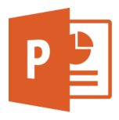
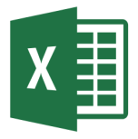
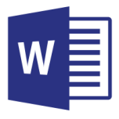
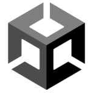
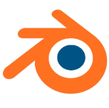
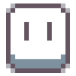
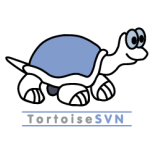
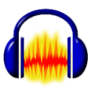

ABILITY





MS Office PowerPoint
활용 수준: A
기획 주제에 적합한 형태로 미적 감각과 가독성을 갖추어 이해하기 쉬운 양질의 문서를 작성할 수 있습니다.
그 외에도..
ChatGPT
- 아이디어 정리, 코드 보조, 자료 조사 등 다양한 작업에 활용하여 1인 게임 개발을 완료했습니다.

Aseprite
- Aseprite, Piskel 등의 스프라이트 에디터를 통해 이미지, 애니메이션 작업이 가능합니다.

Tortoise SVN
- Tortoise SVN등 버전 관리 도구를 활용한 파일 관리 경험이 있습니다.

Audacity
- Audacity 등 음향 편집 도구를 사용해 게임 효과음 샘플을 제작할 수 있습니다.
×